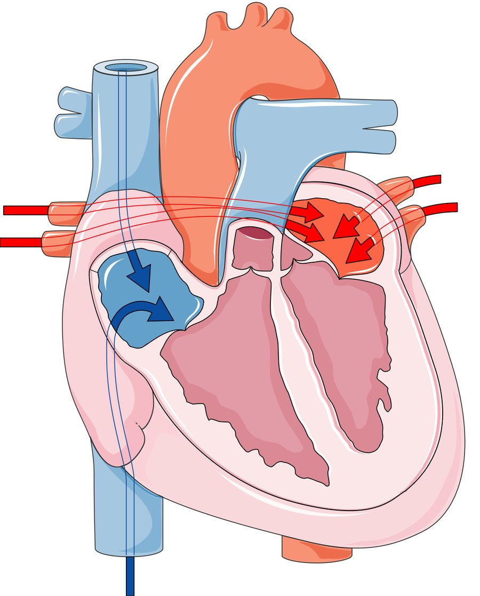
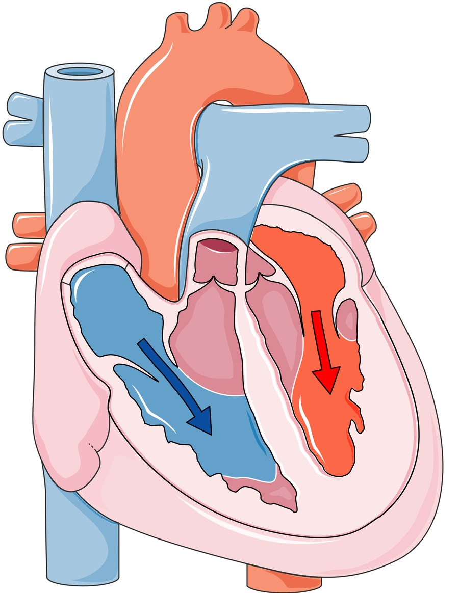
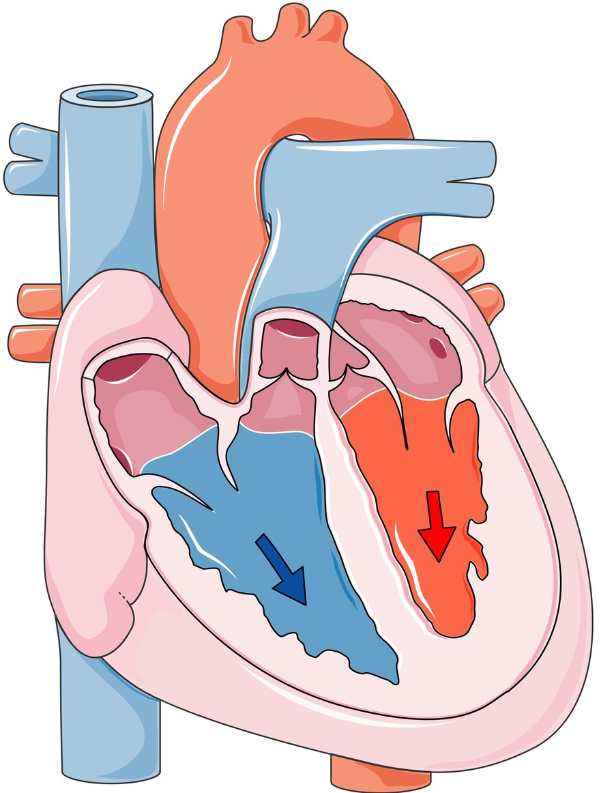
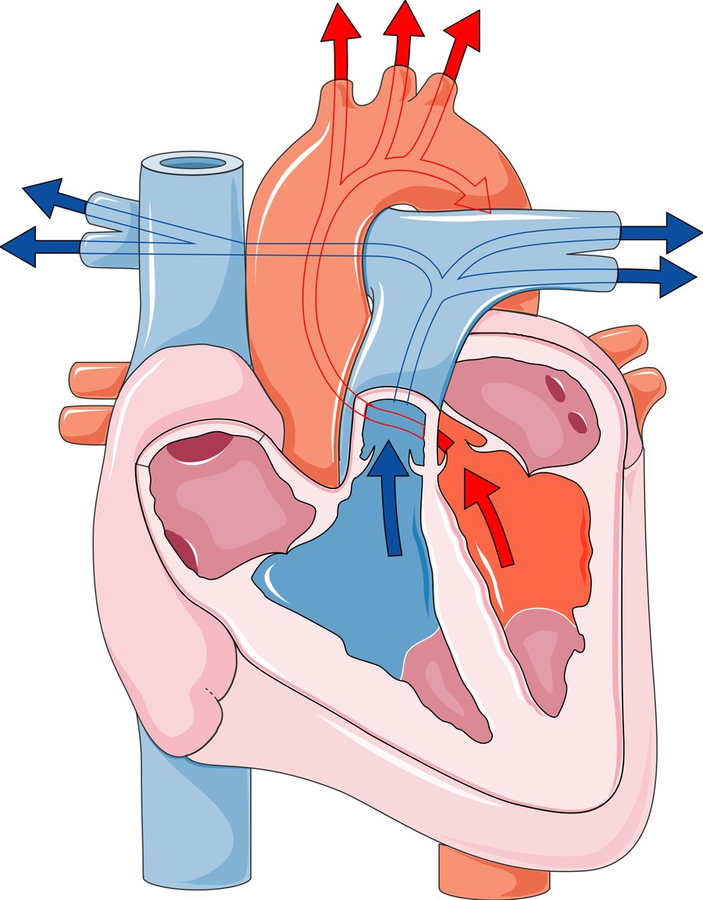

How blood moves through the four chambers of the heart
Teaching example · labelled illustrations and the cardiac cycle in motion
Presenter NameDepartment of Physiology
Venous blood fills the right heart; blood from the lungs fills the left heart
Deoxygenated blood
Oxygenated blood
Each heartbeat fills the ventricles first, then empties them into the great arteries

1Blood returns to the atria

2Valves open; the ventricles fill

3The atria contract and top up the ventricles

4The ventricles contract and eject blood
The left ventricular wall is the thickest because it pumps against systemic pressure